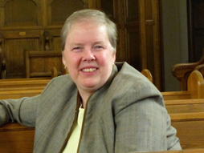

Musical Directors
Roxanne Martel (Director: 2014 - )

As a singer and conductor, Roxanne Martel has always been drawn to the richness and variety of the choral repertoire and to its huge range of expression through the power of combined voices. Roxanne has sung with the Ensemble Musica Orbium since 2002, and has enjoyed performing with other ensembles including the Montreal Elgar Choir, the Stewart Hall Singers and the Aurora Chorealis choir. Roxanne has sung several large-scale choral works, such as the Berlioz Requiem and the Verdi Requiem, with the Montreal Symphony Orchestra.
Roxanne’s conducting experience has included the Beckett Players musical productions, the Labrador City Community Choir, the Mount Royal Ladies’ Chorale and several church choirs. Roxanne has been the music teacher and choral director at The Sacred Heart School of Montreal since 1988.
Roxanne graduated from McGill University with a Bachelor of Music degree, with Honours in School Music. She received a graduate Diploma in Fine Arts, specializing in the Kodály method, from the University of Calgary. In 2004 she took a year-long sabbatical, with an International Kodály Society Scholarship, for study at the International Kodály Institute in Kecskemét, Hungary.
In joining the ensemble this year, Roxanne and the Yellow Door Choir singers hope to bring to audiences a rich and eclectic musical experience.
Dr. Eleanor Stubley (Director: 1998 - 2014)
 Eleanor Stubley is the Associate Dean, Director of Graduate Studies at the Schulich School of Music, McGill University, where she has taught courses in aesthetics, conducting, and Canadian music since 1989. After winning the Jean Goldman Scholarship at the University of Toronto, Eleanor went on to earn her ARCT in French horn at Toronto’s Royal Conservatory of Music in 1984. She received a master’s degree from Brandon University in 1985 and her doctorate from the University of Illinois in 1989. She has studied with Helmut Rilling, Ton Koopman, Victor Feldbrill, and Elmer Isler and has received major awards from the Social Sciences and Humanities Research Council (SSHRC), Fonds pour la formation de chercheurs et l'aide à la recherche (FCAR), and the Canada Council.
Eleanor Stubley is the Associate Dean, Director of Graduate Studies at the Schulich School of Music, McGill University, where she has taught courses in aesthetics, conducting, and Canadian music since 1989. After winning the Jean Goldman Scholarship at the University of Toronto, Eleanor went on to earn her ARCT in French horn at Toronto’s Royal Conservatory of Music in 1984. She received a master’s degree from Brandon University in 1985 and her doctorate from the University of Illinois in 1989. She has studied with Helmut Rilling, Ton Koopman, Victor Feldbrill, and Elmer Isler and has received major awards from the Social Sciences and Humanities Research Council (SSHRC), Fonds pour la formation de chercheurs et l'aide à la recherche (FCAR), and the Canada Council.
In 1992, Eleanor won international acclaim for her work in the International Dvorak Competition. The Gazette in 1996 described her as “one of Canada’s most promising young conductors.” She has been involved with numerous contemporary music projects sponsored by the Canadian Music Centre, the BBC, CBC Radio and Radio-Canada, and the Sibelius Academy of Music (Finland). Eleanor has performed in international contemporary music festivals with the Massey Singers, the Bach Festival Orchestra, Lapulaa, the Vancouver Chamber Singers, and members of the Canadian Opera Company. She is also music director of Chora Carmina, a professional chamber ensemble that specializes in contemporary world music. Her recent film with the Molinari String Quartet, The Pines of Emily Carr, has been described as “beautifully performed” (Starweek), “stark and stirring” (Toronto, Globe and Mail), and “a poster child for the pure art side of the festival” (Montreal, The Gazette).
Critically acclaimed as an author and scholar, Eleanor is completing her book: Music on My Mind, Music in My Body.
Visit Eleanor's web site
Linda Morrison (Director: 1983 - 1997)

The original director of the Yellow Door Choir, singer-songwriter Linda Morrison was there at the genesis of a Montreal institution that under her twelve years of direction became one of the city’s most respected, innovative and community-oriented choirs. Linda’s original arrangements, global musical tastes, vast performing experience, and flair for fun laid the foundation for an ensemble known for its originality, freshness and diversity.
These days, Linda is a frequent guest director and workshop leader for choirs, festivals and community events. She is currently on sabbatical from her position as choir director at The National Theatre School of Canada where she has taught for 13 years. Linda continues to perform concerts of her original songs, which can be heard not only on her own critically-acclaimed CD, Line by Line, but also on recordings by artists such as Quartette, Penny Lang and Karen Young. Her children’s songs have been performed by Fred Penner, and Sharon, Lois and Bram and have been featured regularly on Sesame Street. Her choral arrangements are used across North America and Europe.
Visit Linda's web site